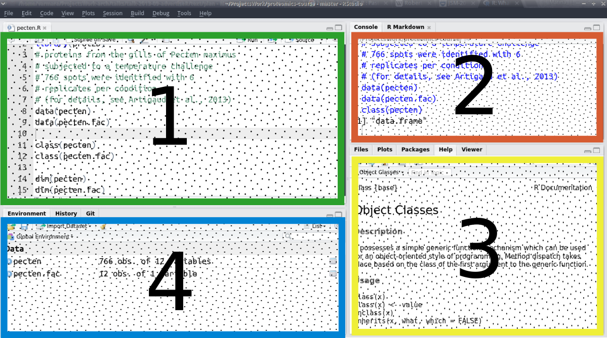
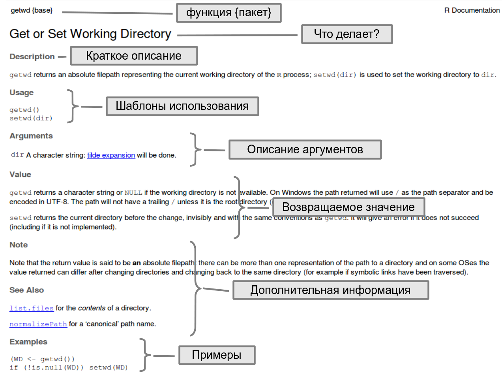
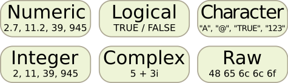
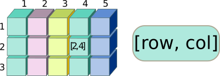

Знакомство с R
Марина Варфоломеева
Как появился R
R (R Core Team 2021) — это язык для статистического анализа и визуализации данных. Он возник как ответвление языка S/Splus, разработанного еще в 70-х годах в Bell Laboratories.

Росс Ихака (Ross Ihaka) и Роберт Джентльмен (Robert Gentleman), молодые ученые из университета Окленда, Новая Зеландия разработали R в 1993 году (Ihaka 1998).

Роберт Джентльмен и Росс Ихака, источник: Росс Ихака
Сейчас Росс Ихака занимается статистикой в университете Окленда (Associate Professor). В 2010 году Ихака начал работать над новым языком с целью усовершенствовать R и улучшить его быстродействие (Ihaka 2010).
Росс Ихака, источник: сайт university of Waikato
Роберт Джентльмен работал как ученый и эксперт в нескольких компаниях биотехнологического и генетического профиля, и недавно стал вицепрезидентом компании 23andMe как эксперт в биоинформатике. Еще в 2001 году Роберт Джентльмен начал работать над проектом Bioconductor.


Роберт Джентльмен, источник: Susie Fitzhugh
RStudio — среда разработки
Создатели RStudio
RStudio (RStudio Team 2019) — это свободно распространяемая среда для разработки (integrated development environment) на языке R.
RStudio была основана в 2009 году американским программистом и интернет-предпринимателем Джозефом Аллером (Joseph J. Allaire). Среду RStudio можно устанавливать на компьютеры с разными операционными системами (Windows, OS X, and Linux).
Джозеф Аллер, источник: Hubert Burda Media on Flickr
Сейчас RStudio, пожалуй, самый удобный вариант среды для разработки на R. Мне кажется, что бум использования R в начале 10-х годов отчасти объясняется тем, что писать программы стало гораздо удобнее благодаря появлению среды RStudio.
К слову, вторая причина роста популярности R — это появление графического пакета ggplot2 (Wickham 2016), написанного Хедли Викхемом (Hadley Wickham). Этот пакет во много раз облегчил построение сложных и красивых графиков. С тех пор Хедли Викхем написал еще много полезных пакетов и сейчас работает Chief Scientist в RStudio и Adjunct Professor в университете Окленда.

Хедли Викхем, источник: Hadley Wickham
Для работы над этим курсом вам понадобится установить
Устройство RStudio

Окно редактора RStudio разделено на 4 области:
- код (зеленый прямоугольник на схеме) - это обычный текстовый редактор, в котором открывают и редактирут файлы с программами.
- консоль/RMarkdown (оранжевый прямоугольник на схеме). На вкладке консоль можно в живом режиме выполнять команды R, если вы не хотите их сохранять в виде программы.
- файлы/графики/пакеты/помощь/просмотр (желтый прямоугольник на схеме). На вкладке помощь можно просматривать файлы справки. На вкладке графики будут появляться графики. На вкладке файлы расположен файловый менеджер, который позволяет перемещаться по директориям вашего проекта и компьютера.
- среда/история (и еще может быть /Git, если ваш проект под контролем версий) (синий прямоугольник на схеме). На вкладке история есть список всех выполненных команд R. На вкладке среда расположен список объектов, находящихся в памяти.

Организация рабочего пространства
- Создайте папку (например,
Proteomics), где будут храниться ВСЕ материалы курса. Например: Мы будем ее называть рабочей директорией. В эту папку помещайте ВСЕ файлы с кодом (с расширением .R). - Внутри папки
Proteomicsсоздайте папкуdata, где будут храниться все файлы с данными для анализа.
В итоге у вас должно получиться примерно это:
C:\Proteomics\
C:\Proteomics\data\Настройка
Все настройки RStudio находятся меню Tools -> Global Options
- Восстановление рабочено пространства из прошлого сеанса — это лучше отменить, т.к. обычно переменные-призраки очень мешают. На вкладке
Generalубираем галочкуRestore .RData into workspace at startup, и меняемSave workspace to .RData on exit-Never. - Перенос длинных строк в окне кода — это удобно. На вкладке
Codeставим галочку рядом с опциейSoft-wrap R source files.
Клавиатурные сокращения
Ctrl + Shift + C- закомментировать/раскомментировать выделенный фрагмент кода.Ctrl + Enter- отправляет строку из текстового редактора в консоль, а если выделить несколько строк, то будет выполнен этот фрагмент кода.TabилиCtrl + Space- нажмите после того как начали набирать название функции или переменной, и появится список автоподстановки. Это помогает печатать код быстро и с меньшим количеством ошибок.
Автоподстановка названий функций начинает работать как только вы ввели несколько первых букв названия функции. Вы можете вызвать ее раньше, если нажмете Tab или Ctrl + Space.

Как только вы полностью ввели название функции и скобки, RStudio автоматически ставит закрывающую скобку и показывает раздел справки Usage для этой функции.

Если вы нажмете Tab или Ctrl + Space, когда курсор находится внутри скобок, то вам покажут список аргументов этой функции с расшифровками их значений из раздела справки Arguments для этой функции.

Установка дополнительных пакетов
R — модульная система, он состоит из пакетов. Некоторые пакеты уже установлены, другие придется устанавливать из внешнего репозитория.
Из центрального репозитория R CRAN пакеты можно установить при помощи функции install.packages(), указав имя пакета. Запустите RStudio (с правами администратора, если вы в Windows) и, для начала, установите пакеты ggplot2 и readxl — они нам сегодня понадобятся.
# Из репозитория CRAN
install.packages("ggplot2")
install.packages("readxl")Остальные пакеты мы будем устанавливать по мере необходимости.
Пакеты единожды устанавливаются в локальную библиотеку, затем их нужно активировать для работы один раз за сеанс.
Основы языка R
Математические операции
2 + 3## [1] 5
36 / 2## [1] 18
7 * 4## [1] 28
5 ^ 2## [1] 25
Для некоторых операций есть специальные функции:
sqrt(27)## [1] 5.196152
Задание 1
Найдите длину гипотенузы прямоугольного треугольника со сторонами 3 и 5 см.
Задание 2
Извлеките кубический корень из 27.
Предупреждения и ошибки (warnings and errors)
Предупреждения
sqrt(-27)## Warning in sqrt(-27): NaNs produced## [1] NaN
Ошибки
sqr(27)Error: could not find function "sqr"Как можно получить помощь в R
- В
RStudioможно поставить курсор на название функции и нажатьF1
sqrt()
- Перед названием функции можно напечатать знак вопроса и выполнить эту строку
?sqrt
- Можно воспользоваться функцией
help()
help("sqrt")
Все файлы справки состоят из нескольких типов разделов.

Задание 3
Что делает функция round()?
Задание 4
Посмотрите в справку к функции log(). Какое основание логарифма используется в R по умолчанию?
Переменные (variables)
Можно сохранить результат любого вычисления или любую величину в переменной. Переменные - это такие контейнеры, в которые можно положить разные данные (и даже функции).
Оператор присваивания это символ стрелочки <- Он работает справа налево, это значит, что значение выражения в его правой части присваивается объекту в левой части. Есть еще более экзотический оператор присваивания слева направо ->, но его не рекомендуют использовать оттого, что хуже читается код.
Имена переменных могут содержать латинские буквы обоих регистров, символы точки . и подчеркивания _ , а так же цифры. Имена переменных должны начинаться с латинских букв. Создавайте понятные и “говорящие” имена переменных.
num_1 <- 1024 / 2
num_1## [1] 512
1238 * 3 -> num_2 # экзотический вариант
num_2## [1] 3714
Правила именования переменных
Просто a — плохо, и даже b, с, или х. Но в некоторых случаях название из одной буквы вполне допустимо:)
var1— плохо, но уже лучшеvar_1— тоже плохо, но уже лучшеshelllength— говорящее, но плохо читаетсяshell_length,wing_colourилиleg_num— хорошие, говорящие, короткие, но вполне читабельные названия.
Осторожно, переменные можно случайно или намеренно перезаписать. Пока что num_1 было равно 512, но если мы присвоим переменной num_1 другое значение — ее содержимое изменится.
num_1## [1] 512
num_1 <- 2^2
num_1## [1] 4
Код — это линейная последовательность действий. Переменные можно использовать только после того, как они были созданы.
Пример 1
# Неправильно:
box_wt <- 1.2
apples <- 6
box / apples # ошибка. переменная box еще не была создана.
# нужная переменная называется box_wt.
# Правильно:
box_wt <- 1.2
apples <- 6
box_wt / applesПример 2
# Неправильно:
box <- 1.3
box / fruits # ошибка. переменная fruits еще не была создана.
fruits <- 7
# Правильно:
box <- 1.3
fruits <- 7
box / fruitsЗадание 5
Переставьте строки так, чтобы код можно было выполнить без ошибки.
distance <- 120
speed <- distance / time
time <- 6Задание 6
Ширина прямоугольника 2 см, а длина на 7 см больше. Чему равен периметр? (В решении создайте и используйте переменные width, len и per).
Типы данных в R
В R всего шесть различных типов данных. Но нам пригодятся только некоторые из них.

Числовые данные
Мы только что их видели.
По умолчанию используется тип numeric, который позволяет хранить целые и дробные числа.

Есть еще тип integer, который предназначен для хранения целых чисел.

И, наконец, тип complex используется для хранения комплексных чисел.

Текстовые данные (character)
Текстовые данные используются для хранения последовательностей символов произвольной длины.

Каждый текстовый элемент должен быть окружен кавычками - двойными или одинарными
"это текст"## [1] "это текст"
'это тоже текст'## [1] "это тоже текст"
Логические данные (logical)
Логические данные используются для записи значений типа истина/ложь.

В R определены две логические константы: TRUE и FALSE
TRUE # истина## [1] TRUE
FALSE # ложь## [1] FALSE
Для ленивых — если вы вдруг очень спешите, то можно сокращать первыми заглавными буквами. Но лучше так не делать, чтобы читать программы было легче.
T## [1] TRUE
F## [1] FALSE
Сырые данные (raw)
Тип raw используется для хранения “сырых” последовательностей байтов. Это очень экзотический тип, нам он не пригодится.

Встроенные в R константы
В R есть несколько встроенных констант. Нам пригодятся только несколько из них.
NA — англ “not available”. Когда объект был, но его свойство не измерили или не записали. Что произойдет с NA при различных операциях?
NA + 2## [1] NA
NA * 0## [1] NA
NA / 0## [1] NA
sqrt(NA)## [1] NA
Inf — “infinity” — бесконечность. Вы увидите Inf при делении чисел на ноль.
1 / 0## [1] Inf
NaN — “not a number”. NaN получится при делении нуля на ноль, или если взять корень из отрицательного числа.
0 / 0## [1] NaN
sqrt(-1)## Warning in sqrt(-1): NaNs produced## [1] NaN
NULL — ноль, т.е. это значит “пусто,” “ничего нет.”
Основные структуры данных в R
Данные в R можно хранить в виде разных объектов: вектор, матрица, массив, список, датафрейм. Мы бегло рассмотрим только некоторые из них.
Векторы (vectors)
Основной объект R - векторы. Векторы - один объект, внутри которого может быть одно или несколько значений. Главное, чтобы эти значения относились к одному и тому же типу данных.

Вам могло показаться, что в результате выполнения следующих команд получаются просто числа:
23## [1] 23
sqrt(25)## [1] 5
но на самом деле, это векторы единичной длины. В R можно легко создавать векторы большей длины.
Создание векторов из произвольных элементов
Функция c() — от англ. concatenate. Функция c принимает несколько (произвольное количество) аргументов, разделенных запятыми, и собирает из них вектор (см. справку ?c). Когда используете функцию c(), следите, чтобы было английское “си,” а не русское “эс.”
c(2, 4, 6)## [1] 2 4 6
c(-9.3, 0, 2.17, 21.3)## [1] -9.30 0.00 2.17 21.30
Векторы можно хранить в переменных для последующего использования.
vect_num <- c(2, 4, 6, 8, 10, 12, 14, 16)
vect_num_1 <- c(1.3, 1.7, NA, 0.9, 1.6, 1.4)При помощи функции c() можно объединять несколько векторов в один вектор.
c(1, 1, 5:9)## [1] 1 1 5 6 7 8 9
c(vect_num, vect_num_1)## [1] 2.0 4.0 6.0 8.0 10.0 12.0 14.0 16.0 1.3 1.7 NA 0.9 1.6 1.4
c(100, vect_num)## [1] 100 2 4 6 8 10 12 14 16
Вектора могут содержать не только числа, но и логические значения, текст.
c(TRUE, TRUE, TRUE, FALSE, FALSE, TRUE)## [1] TRUE TRUE TRUE FALSE FALSE TRUE
colours <- c("red", "orange", "yellow", "green", "blue", "violet")Задание 7
Создайте вектор, в котором будут буквами закодированы нуклеотиды ДНК в алфавитном порядке.
Задание 8
Создайте вектор, в котором будет три наименьших отрицательных целых числа в порядке возрастания.
Создание векторов из целых чисел подряд
Оператор : используется для создания целочисленных векторов, где значения следуют одно за другим без пропусков
1:10 # от одного до 10## [1] 1 2 3 4 5 6 7 8 9 10
-5:3 # от -5 до 3## [1] -5 -4 -3 -2 -1 0 1 2 3
Задание 9
Создайте вектор из целых чисел от 1 до 100. Как вы думаете, что означают номера в квадратных скобках в начале каждой строки?
Создание векторов из повторяющихся элементов
Чтобы создавать длинные векторы из повторяющихся элементов, можно использовать функцию rep()
?rep
rep(x = 1, times = 3) # 1 повторяется 3 раза## [1] 1 1 1
rep(x = "red", times = 5) # "red" повторяется 5 раз## [1] "red" "red" "red" "red" "red"
rep(x = TRUE, times = 2) # TRUE повторяется 2 раза## [1] TRUE TRUE
Названия аргументов функций в R можно не указывать, если вы используете аргументы в том же порядке, что прописан в help к этой функции.
rep(TRUE, 5) # TRUE повторяется 5 раз, аргументы без названий## [1] TRUE TRUE TRUE TRUE TRUE
Создаем логический вектор, где TRUE повторяется 3 раза, FALSE 3 раза и TRUE 4 раза. Результат сохраняем в переменной vect_log.
vect_log <- c(rep(TRUE, 3), rep(FALSE, 3), rep(TRUE, 4))
vect_log## [1] TRUE TRUE TRUE FALSE FALSE FALSE TRUE TRUE TRUE TRUE
Задание 10
Создайте вектор season в котором названия времен года будут следовать в том же порядке, что и месяцы года, к которым они относятся (начиная с января).
Адресация внутри векторов
При помощи оператора [], мужно обратится к некоторым элементам вектора.

В квадратных скобках вам нужно указать порядковые номера элементов вектора, которые вы хотите добыть — один или несколько.
vect_num # весь вектор## [1] 2 4 6 8 10 12 14 16
vect_num[1] # первый элемент## [1] 2
vect_num[3] # 3-й элемент## [1] 6
Если вам нужно несколько элементов, то их нужно указать в квадратных скобках их порядковые номера в виде вектора.
colours # весь вектор## [1] "red" "orange" "yellow" "green" "blue" "violet"
colours[3:5] # 3-5 элемент## [1] "yellow" "green" "blue"
Аналогично, если вам нужны элементы не подряд, то укажите в квадратных скобках вектор с номерами элементов, который вы создали при помощи функции c().
vect_num[c(2, 4, 6)]## [1] 4 8 12
colours[c(1, 6)]## [1] "red" "violet"
Вектор — одномерный объект. У его элементов только один порядковый номер (индекс). Поэтому при обращении к элементам вектора нужно указывать только одно число или один вектор с адресами. R выдаст ошибку, если при обращении к вектору, вы не создавали вектор, а просто перечислили номера элементов через запятую.
vect_num[2, 4, 6]Error in vect_num[2, 4, 6] : incorrect number of dimensionscolours[1, 6]Error in colours[1, 6] : incorrect number of dimensionsЕсли попытаться добыть из вектора номер элемента, которого там точно нет, то R выдаст NA, потому, что такого элемента нет
vect_num[198]## [1] NA
В R есть встроенные константы, которые помогают быстро генерировать искуственные текстовые векторы (см. ?Constants).
LETTERS## [1] "A" "B" "C" "D" "E" "F" "G" "H" "I" "J" "K" "L" "M" "N" "O" "P" "Q" "R" "S"
## [20] "T" "U" "V" "W" "X" "Y" "Z"
letters## [1] "a" "b" "c" "d" "e" "f" "g" "h" "i" "j" "k" "l" "m" "n" "o" "p" "q" "r" "s"
## [20] "t" "u" "v" "w" "x" "y" "z"
month.abb## [1] "Jan" "Feb" "Mar" "Apr" "May" "Jun" "Jul" "Aug" "Sep" "Oct" "Nov" "Dec"
month.name## [1] "January" "February" "March" "April" "May" "June"
## [7] "July" "August" "September" "October" "November" "December"
Задание 11
Извлеките из вектора month.name
- летние месяцы,
- зимние месяцы.
Задание 12
Извлеките из вектора LETTERS буквы в таком порядке, чтобы получилось слово SUN.
Операции с векторами
Поэкспериментируем с векторами. Проверим, как работают арифметические операции
vect_num + 2## [1] 4 6 8 10 12 14 16 18
vect_num * 2## [1] 4 8 12 16 20 24 28 32
vect_num * (-2)## [1] -4 -8 -12 -16 -20 -24 -28 -32
vect_num^2## [1] 4 16 36 64 100 144 196 256
Арифметические операции выполняются с каждым элементом вектора — это векторизованные операции.
С самими векторами тоже можно делать некоторые операции.
sum(vect_num)## [1] 72
length(vect_num)## [1] 8
mean(vect_num)## [1] 9
min(vect_num)## [1] 2
Задание 13
Создайте переменную powers_of_two, в которой сохраните последовательность из целочисленных степеней двойки — с первой по пятую. Используйте векторизацию. Выведите содержимое powers_of_two в консоль.
Матрицы (matrices)
Матрицы — это двумерные объекты, похожие на таблицы, в которых хранятся данные только одного определенного типа.

Матрицы создают при помощи функции matrix(), которой нужно передать вектор с данными и размер будущей матрицы (число строк или столбцов).
# Матрица с числовыми данными
matrix(data = 1:12, nrow = 4)## [,1] [,2] [,3]
## [1,] 1 5 9
## [2,] 2 6 10
## [3,] 3 7 11
## [4,] 4 8 12
# Матрица с текстовыми данными
matrix(data = LETTERS[1:12], ncol = 6)## [,1] [,2] [,3] [,4] [,5] [,6]
## [1,] "A" "C" "E" "G" "I" "K"
## [2,] "B" "D" "F" "H" "J" "L"
Обычно элементы записываются в матрицу столбцами
matrix(data = 1:6, ncol = 3)## [,1] [,2] [,3]
## [1,] 1 3 5
## [2,] 2 4 6
Порядок заполнения матрицы элементами можно изменить, если указать byrow = TRUE.
matrix(data = 1:6, ncol = 3, byrow = TRUE)## [,1] [,2] [,3]
## [1,] 1 2 3
## [2,] 4 5 6
Адресация в матрицах
Поскольку матрицы — это двумерные объекты, позиции элементов в них можно описать при помощи двух индексов, в отличие от векторов. Первым в квадратных скобках следует номер строки, вторым — номер столбца

mat <- matrix(data = LETTERS[1:12], ncol = 3)
mat## [,1] [,2] [,3]
## [1,] "A" "E" "I"
## [2,] "B" "F" "J"
## [3,] "C" "G" "K"
## [4,] "D" "H" "L"
mat[3, 2]## [1] "G"
mat[1, ]## [1] "A" "E" "I"
mat[, 3]## [1] "I" "J" "K" "L"
mat[, -1]## [,1] [,2]
## [1,] "E" "I"
## [2,] "F" "J"
## [3,] "G" "K"
## [4,] "H" "L"
mat[1:3, c(1, 3)]## [,1] [,2]
## [1,] "A" "I"
## [2,] "B" "J"
## [3,] "C" "K"
Задание 14
Создайте матрицу calendar с названиями месяцев, так, чтобы в первой строке был первый квартал.
Задание 15
Выберите из матрицы calendar месяцы третьего квартала.
Задание 16
Выберите из матрицы calendar июнь.
Массивы (arrays)
Массивы — это многомерные объекты, в которых можно хранить данные одного и того же типа. По структуре они очень похожи на матрицы

ar <- array(data = 1:24, dim = c(2, 4, 3))
ar## , , 1
##
## [,1] [,2] [,3] [,4]
## [1,] 1 3 5 7
## [2,] 2 4 6 8
##
## , , 2
##
## [,1] [,2] [,3] [,4]
## [1,] 9 11 13 15
## [2,] 10 12 14 16
##
## , , 3
##
## [,1] [,2] [,3] [,4]
## [1,] 17 19 21 23
## [2,] 18 20 22 24
Адресация в массивах
Адреса в массивах указываются в том же порядке: сначала идет строка, за ней столбец, затем следуют прочие измерения.

ar[1, 2, 3]## [1] 19
ar[, , 1]## [,1] [,2] [,3] [,4]
## [1,] 1 3 5 7
## [2,] 2 4 6 8
ar[, 1, ]## [,1] [,2] [,3]
## [1,] 1 9 17
## [2,] 2 10 18
ar[1, , ]## [,1] [,2] [,3]
## [1,] 1 9 17
## [2,] 3 11 19
## [3,] 5 13 21
## [4,] 7 15 23
ar[1, 1:3, 1]## [1] 1 3 5
ar[, , -1]## , , 1
##
## [,1] [,2] [,3] [,4]
## [1,] 9 11 13 15
## [2,] 10 12 14 16
##
## , , 2
##
## [,1] [,2] [,3] [,4]
## [1,] 17 19 21 23
## [2,] 18 20 22 24
Датафреймы (data frames)
Датафреймы — это такие двумерные таблицы, в которых столбцы могут содержать данные разных типов.

x <- 2014:2017
y <- LETTERS[1:4]
z <- c(TRUE, TRUE, FALSE, TRUE)
dat <- data.frame(year = x, type = y, test_passed = z, stringsAsFactors = FALSE)
dat## year type test_passed
## 1 2014 A TRUE
## 2 2015 B TRUE
## 3 2016 C FALSE
## 4 2017 D TRUE
Адресация в датафреймах
Чтобы вытащить фрагмент датафрейма, можно использовать несколько вариантов действий.
Во-первых, оператор [] работает с датафреймами точно так же как и с матрицами. Поскольку датафреймы — это двумерные объекты, позиции элементов в них можно описать при помощи двух индексов. Первым в квадратных скобках [], как обычно, следует номер строки, вторым — номер столбца.

dat[2, 2]## [1] "B"
На месте индекса столбцов в [] квадратных скобках можно указать вектор имен переменных вместо их номеров.
dat[, c("year", "test_passed")]## year test_passed
## 1 2014 TRUE
## 2 2015 TRUE
## 3 2016 FALSE
## 4 2017 TRUE
Во-вторых, оператор $ позволяет выбрать одну из переменных по имени
dat$year## [1] 2014 2015 2016 2017
Можно использовать комбинацию предыдущих техник.
dat$test_passed[3]## [1] FALSE
Задание 17
Создайте датафрейм year, в котором будет две переменные: month и season.
Задание 18
Выберите из датафрейма year
- строки, соответствующие весенним месяцам
- время года, которому соответствует июнь
- всю колонку, кодирующую сезон
Списки (lists)
Списки позволяют хранить данные различных типов, и при этом разной длины.

list(dat, mat, vect_num, colours)## [[1]]
## year type test_passed
## 1 2014 A TRUE
## 2 2015 B TRUE
## 3 2016 C FALSE
## 4 2017 D TRUE
##
## [[2]]
## [,1] [,2] [,3]
## [1,] "A" "E" "I"
## [2,] "B" "F" "J"
## [3,] "C" "G" "K"
## [4,] "D" "H" "L"
##
## [[3]]
## [1] 2 4 6 8 10 12 14 16
##
## [[4]]
## [1] "red" "orange" "yellow" "green" "blue" "violet"
Можно создавать именованные списки
lst <- list(Dfr = dat, Matr = mat, Vect1 = vect_num, Vect2 = colours)
lst## $Dfr
## year type test_passed
## 1 2014 A TRUE
## 2 2015 B TRUE
## 3 2016 C FALSE
## 4 2017 D TRUE
##
## $Matr
## [,1] [,2] [,3]
## [1,] "A" "E" "I"
## [2,] "B" "F" "J"
## [3,] "C" "G" "K"
## [4,] "D" "H" "L"
##
## $Vect1
## [1] 2 4 6 8 10 12 14 16
##
## $Vect2
## [1] "red" "orange" "yellow" "green" "blue" "violet"
Кстати, датафрейм можно определить как список векторов одинаковой длины.
Адресация в списках
Для выбора данных из списков существует несколько вариантов действий.
- Хорошо нам знакомый оператор
[]работает и со списками. Он позволяет извлечь элементы списков в виде списков.
lst[1:2] # список из двух элементов## $Dfr
## year type test_passed
## 1 2014 A TRUE
## 2 2015 B TRUE
## 3 2016 C FALSE
## 4 2017 D TRUE
##
## $Matr
## [,1] [,2] [,3]
## [1,] "A" "E" "I"
## [2,] "B" "F" "J"
## [3,] "C" "G" "K"
## [4,] "D" "H" "L"
lst[1] # список из одного элемента## $Dfr
## year type test_passed
## 1 2014 A TRUE
## 2 2015 B TRUE
## 3 2016 C FALSE
## 4 2017 D TRUE
- Чтобы извлечь содержимое элемента списка, нужно использовать двойные квадратные скобки
[[]]. С элементом списка дальше можно производить любые действия в обычном порядке.
lst[[1]]## year type test_passed
## 1 2014 A TRUE
## 2 2015 B TRUE
## 3 2016 C FALSE
## 4 2017 D TRUE
lst[[1]]$v2## NULL
- При помощи оператора
$можно извлечь элементы из именованного списка по их именам. Дальше с этими элементами можно проводить любые манипуляции.
lst$Vect1## [1] 2 4 6 8 10 12 14 16
lst$Matr[, 1]## [1] "A" "B" "C" "D"
Факторы (factors) — особый тип данных
Факторы - это способ хранения дискретных (= категориальных данных). Например, если вы поймали 10 улиток и посмотрели их цвет. У большого количества улиток небольшое счетное количество возможных цветов.
snail_colours <- c("red", "green", "green", "green", "yellow", "yellow", "yellow", "yellow")
snail_colours # это текстовый вектор.## [1] "red" "green" "green" "green" "yellow" "yellow" "yellow" "yellow"
Но цвет “желтый” обозначает одно и то же для каждой из улиток. Поэтому в целях экономии места можно записать цвета этих улиток в виде вектора, в котором численным значениям будут сопоставлены “этикетки” (называются “уровни” - levels) - названия цветов. Мы можем создать “фактор” цвет улиток.
f_snail_alphabet <- factor(snail_colours)
f_snail_alphabet## [1] red green green green yellow yellow yellow yellow
## Levels: green red yellow
Уровни этого фактора: 1 - green, 2 - red, 3 - yellow. По умолчанию, R назначает порядок уровней по алфавиту. Можно изменить порядок (см. help("factor")). Нам это пригодится позже.
f_snail_ryg <- factor(snail_colours, levels = c("red", "yellow", "green"))
f_snail_ryg## [1] red green green green yellow yellow yellow yellow
## Levels: red yellow green
f_snail_yrg <- relevel(f_snail_ryg, ref = "yellow")
f_snail_yrg## [1] red green green green yellow yellow yellow yellow
## Levels: yellow red green
Задание 19
Из вектора season, созданного ранее, создайте фактор season_f с алфавитным порядком уровней.
Задание 20
Из вектора season, созданного ранее, создайте фактор season_f , в котором уровни следуют в том же порядке, что и времена года в году.
Задание 21
Из вектора season, созданного ранее, создайте фактор season_f, в котором уровни следуют в том же порядке, что и времена года в году, и называются первыми двумя буквами.
Работа с логическими данными
Операторы сравнения
Операторы сравнения используются для проверки условий.
==— равно>— больше<— меньше!=— не равно>=— больше или равно<=— меньше или равно
Кроме операторов сравнения есть функции, названия которых начинаются на is (например, is.numeric(), is.na()), оператор сопоставления %in% и т.п.
?Comparison # справка об операторах сравнения
?match # о сопоставленииПример:
vect_num # ранее созданный вектор## [1] 2 4 6 8 10 12 14 16
vect_num > 8## [1] FALSE FALSE FALSE FALSE TRUE TRUE TRUE TRUE
vect_num != 2## [1] FALSE TRUE TRUE TRUE TRUE TRUE TRUE TRUE
Логические операторы
Логические операторы используются для того, чтобы проверить сразу несколько условий
& — логическое “И”:
TRUE & TRUE—TRUETRUE & FALSE—FALSEFALSE & FALSE—FALSE
| — логическое “ИЛИ”:
TRUE | TRUE—TRUETRUE | FALSE—TRUEFALSE | FALSE—FALSE
! — логическое отрицание:
!TRUE—FALSE!FALSE—TRUE
?Logic # Справка о логических операторахПример:
vect_num # ранее созданный вектор## [1] 2 4 6 8 10 12 14 16
(vect_num != 2) & (vect_num < 8)## [1] FALSE TRUE TRUE FALSE FALSE FALSE FALSE FALSE
season # ранее созданный вектор## [1] "winter" "winter" "spring" "spring" "spring" "summer" "summer" "summer"
## [9] "autumn" "autumn" "autumn" "winter"
season == "spring"## [1] FALSE FALSE TRUE TRUE TRUE FALSE FALSE FALSE FALSE FALSE FALSE FALSE
Задание 22
При помощи вектора season, создайте логический вектор, где TRUE стоит везде, кроме зимних месяцев.
Отбор данных с помощью логических векторов
Логический вектор можно использовать внутри оператора [] для извлечения данных. Например, давайте извлечем месяц, который называется “June.”
month.name[month.name == "June"]## [1] "June"
Если есть несколько сопряженных векторов, то проверку условия по одному из них вполне можно использовать для отбора значений в другом. Например, можно извлечь только весенние месяцы при помощи проверки условия. Это проще, чем вручную.
month.name[season == "spring"]## [1] "March" "April" "May"
Аналогичным образом, можно использовать логические векторы для фильтрации датафреймов. Отберем строки с зимними месяцами из датафрейма year.
year[year$season == "winter", ]## month season
## 1 January winter
## 2 February winter
## 12 December winter
Можем отобрать не строки целиком, а только значение переменной month.
year$month[year$season == "winter"]## [1] "January" "February" "December"
year[year$season == "winter", "month"]## [1] "January" "February" "December"
Следующие несколько заданий используют данные о продолжительности сна млекопитающих (датасет msleep из пакета ggplot2). Данные можно загрузить так:
library(ggplot2) # активируем пакет ggplot2
data("msleep") # активируем встроенный датасет msleepЗадание 23
Добудьте из msleep английские названия видов, у которых общая продолжительность сна больше 15 часов.
Задание 24
По данным msleep посчитайте, какова средняя продолжительность сна хищников.
Задание 25
По данным msleep посчитайте, какова минимальная продолжительность сна травоядных.
Задание 26
По данным msleep найдите, у какого животного минимальная продолжительность сна.
Как узнать, к какому классу структур данных относится содержимое переменной?
Для того, чтобы узнать к какой структуре данных относится переменная, можно воспользоваться функцией class()
class(f_snail_alphabet)## [1] "factor"
class(vect_log)## [1] "logical"
class(vect_num)## [1] "numeric"
class(colours)## [1] "character"
class(mat)## [1] "matrix" "array"
class(ar)## [1] "array"
class(dat)## [1] "data.frame"
class(lst)## [1] "list"
Приведение (coercion), проверка принадлежности к классу/типу.
Приведение (coercion) — это преобразование объекта из одного типа данных в другой. Функции для конверсии называются по единому паттерну: as.имя_типа(). Функции для проверки называются is.имя_типа(). Аналогичные функции есть для принадлежности разным классам структур данных (as.имя_класса(), is.имя_класса()).
vect_num## [1] 2 4 6 8 10 12 14 16
as.character(vect_num)## [1] "2" "4" "6" "8" "10" "12" "14" "16"
vect_log## [1] TRUE TRUE TRUE FALSE FALSE FALSE TRUE TRUE TRUE TRUE
as.numeric(vect_log)## [1] 1 1 1 0 0 0 1 1 1 1
as.character(vect_log)## [1] "TRUE" "TRUE" "TRUE" "FALSE" "FALSE" "FALSE" "TRUE" "TRUE" "TRUE"
## [10] "TRUE"
as.character(as.numeric(vect_log))## [1] "1" "1" "1" "0" "0" "0" "1" "1" "1" "1"
as.numeric(as.character(vect_log))## Warning: NAs introduced by coercion## [1] NA NA NA NA NA NA NA NA NA NA
is.character(vect_num)## [1] FALSE
is.numeric(vect_num)## [1] TRUE
is.logical(vect_log)## [1] TRUE
is.vector(vect_log)## [1] TRUE
is.matrix(vect_log)## [1] FALSE
as.matrix(vect_log)## [,1]
## [1,] TRUE
## [2,] TRUE
## [3,] TRUE
## [4,] FALSE
## [5,] FALSE
## [6,] FALSE
## [7,] TRUE
## [8,] TRUE
## [9,] TRUE
## [10,] TRUE
is.matrix(mat)## [1] TRUE
is.array(dat)## [1] FALSE
as.data.frame(mat)## V1 V2 V3
## 1 A E I
## 2 B F J
## 3 C G K
## 4 D H L
Функции (functions)
Вы уже видели массу функций, их легко узнать по скобкам после ключевого слова.
Познакомимся еще с несколькими и научимся писать пользовательские функции. Пользовательские функции позволяют автоматизировать повторяющиеся действия и делают код легко читаемым.
Вспомним, как выглядят наши векторы
vect_num## [1] 2 4 6 8 10 12 14 16
vect_num_1## [1] 1.3 1.7 NA 0.9 1.6 1.4
Помните, мы говорили, что длину вектора можно вычислить при помощи функции length(), а сумму элементов вектора при помощи функции sum(), среднее — при помощи mean().
mean(vect_num)## [1] 9
mean(vect_num_1)## [1] NA
Вектор vect_num_1 содержит NA. Чтобы не учитывать NA при подсчете, нужно использовать аргумент na.rm = TRUE.
mean(vect_num_1, na.rm = TRUE)## [1] 1.38
Попробуем написать пользовательскую функцию my_mean(), которая будет по умолчанию считать среднее значение элементов в векторе с учетом пропущенных значений (NA)
my_mean <- function(x){
mean(x, na.rm = TRUE)
}В этом коде:
my_mean— переменная, название функции. В эту переменную мы складываем функцию, которую создает функцияfunction()function()— функция, которая делает функции. В скобках перечисляются аргументы (названия переменных, которые мы передаем в функцию, чтобы она что-то сделала с ними){ }— в фигурных скобках тело функции — последовательность действий, которую нужно сделать с аргументами
Иногда у функций бывает еще инструкция return(), которая сообщает, что именно должна возвращать наша функция. Вот как выглядела бы наша функция с этой инструкцией
my_mean <- function(x){
res <- mean(x, na.rm = TRUE)
return(res)
}Любую пользовательскую функцию нужно протестировать. Несмотря на то, что наша функция my_mean() очень простая и проверка будет выглядеть несколько натянуто, давайте проверим ее при помощи встроенной функции.
mean(vect_num_1, na.rm = TRUE)## [1] 1.38
my_mean(vect_num_1)## [1] 1.38
Наша функция работает правильно.
Чтение данных из файлов
Рабочая директория
Напомним, как можно организовать хранение файлов:
C:\Proteomics\— файлы со скриптами .R и другие материалы курса.C:\Proteomics\data\— файлы с данными.
Скачайте файлы с данными к этому занятию и поместите их в папке data внутри вашей рабочей директории.
- Данные (Kikuta et al. 2009):
Чтобы при открытии не пришлось полностью прописывать пути к файлам, удобно попросить R считать C:\Proteomics\ рабочей директорией. Тогда можно будет указывать относительный путь к файлам.
Например, пусть вам нужно открыть файл expression_3.csv, лежащий в C:\Proteomics\data\. Если ваша рабочая директория C:\Proteomics\, достаточно написать "data/expression_3.csv". Если рабочей будет какая-то другая директория, то придется писать полный путь к файлу.
Я рекомендую использовать относительные пути, т.к. это позволяет легче переносить файлы с одной машины на другую с сохранением структуры проекта.
Способы установки пути к рабочей директории (working directory)
- Выберите в меню
Session->Set working Directory...->To Source File Location(Если вы уже сохранили код). - На вкладке
Filesв одной из рабочих областейRStudioвыберите многоточие...-> в открывшемся системном диалоге выбора файлов найдите директорию, в которой лежит ваш код и нажмите OK - Можно вручную прописать путь к рабочей директории в кавычках в качестве аргумента функции
setwd()(например,setwd("/media/data/proteomics")).
Чтение из текстовых файлов
Один из часто используемых форматов файлов для хранения табличных данных — текстовые файлы с разделителями (.csv, .delim, .txt).
Если открыть в текстовом редакторе файл expression_3.csv, можно заметить, что в нем есть названия переменных в первой строке, отдельные столбцы отделены друг от друга запятыми, а десятичные разряды в числах — точками.
Для чтения данных из текстовых файлов с разделителями существует масса функций, но все они — это модификации одной главной функции read.table(). У этой функции очень много аргументов, которые позволяют настроить ее для открытия самых разных типов текстовых файлов. О назначении аргументов можно узнать в файле справки ?read.table

Чтобы открыть этот файл в R, можно выполнить команду:
dat <- read.table(file = "data/expression_3.csv", header = TRUE, sep = ",", dec = ".")file— абсолютный или, как в данном случае, относительный (относительно рабочей директории) путь к файлу с данными.header— есть в файле заголовок или нетsep— разделитель столбцовdec— разделитель десятичных разрядов
Есть еще одна полезная опция
stringsAsFactors— автоматически преобразовывать переменные с текстовыми значениями в факторы. По умолчанию ее значениеTRUE, но это не всегда удобно. Сейчас мы не станем ею пользоваться, но просто будем помнить о такой возможности.
После открытия файла стоит убедится, все ли правильно прочитано.
head(dat)## X X1 X2 X3 X4 X5 X6
## 1 1 0.7814702 0.466564038544439 0.9196198 1.2080542 1.661304 0.589023300123506
## 2 2 0.9113954 0.471713563732519 1.1503507 0.8128223 1.934507 0.585117486854568
## 3 3 1.0613039 0.599890221191235 0.8434016 0.8844307 1.893101 0.624861083185558
## 4 4 0.8278565 0.495471847477093 1.0653368 0.9210217 1.884009 0.637964490016918
## 5 5 0.8043413 0.489740774633650 1.0623114 1.0106327 1.480689 0.638018474951418
## 6 6 1.0145113 0.399992860034031 0.8525728 1.2007840 1.220451 0.506429298603763
## X7 X8
## 1 0.7734419 0.7143289
## 2 0.6315635 0.5697395
## 3 0.8040159 0.7274658
## 4 0.7560546 0.6491424
## 5 0.7421269 0.7787694
## 6 0.9793544 0.2480020
На первый взгляд, все выглядит хорошо, но не тут то было. Давайте проверим, правильно ли R определил классы переменных.
sapply(dat, class)## X X1 X2 X3 X4 X5
## "integer" "numeric" "character" "numeric" "numeric" "numeric"
## X6 X7 X8
## "character" "numeric" "numeric"
Странным образом, столбцы X2 и X6 были преобразованы в факторы. Скорее всего, это произошло из-за того, что кроме цифр там встречались какие-то другие символы. В данном случае, мы точно знаем, что там должны быть только числа, поэтому принудительно преобразуем факторы в числа.
dat1 <- within(dat, {
X2 <- as.numeric(as.character(X2))
X6 <- as.numeric(as.character(X6))
}
)## Warning in eval(substitute(expr), e): NAs introduced by coercion
## Warning in eval(substitute(expr), e): NAs introduced by coercionR предупреждает нас о появлении NA. Теперь мы можем разобраться из-за чего это произошло. Отфильтруем те значения в старом датафрейме, на месте которых получились NA.
dat$X2[is.na(dat1$X2)]## [1] "-" "-" "-" "-"
dat$X6[is.na(dat1$X6)]## [1] "-" "-"
Видно, что в исходном файле пропущенные значения были обозначены -.
Проверим, правильно ли определены типы переменных после преобразования.
sapply(dat1, class)## X X1 X2 X3 X4 X5 X6 X7
## "integer" "numeric" "numeric" "numeric" "numeric" "numeric" "numeric" "numeric"
## X8
## "numeric"
Теперь все правильно.
Чтение из архивированных файлов
unz() позволяет извлекать файлы из архивов. В том числе, если внутри архивов они лежат в своих директориях.
dat2 <- read.table(unz("./data/expression_3.zip", "expression_analysis/3.csv"), header=T, sep=",", stringsAsFactors = FALSE)
head(dat2)## X X1 X2 X3 X4 X5 X6
## 1 1 0.7814702 0.466564038544439 0.9196198 1.2080542 1.661304 0.589023300123506
## 2 2 0.9113954 0.471713563732519 1.1503507 0.8128223 1.934507 0.585117486854568
## 3 3 1.0613039 0.599890221191235 0.8434016 0.8844307 1.893101 0.624861083185558
## 4 4 0.8278565 0.495471847477093 1.0653368 0.9210217 1.884009 0.637964490016918
## 5 5 0.8043413 0.489740774633650 1.0623114 1.0106327 1.480689 0.638018474951418
## 6 6 1.0145113 0.399992860034031 0.8525728 1.2007840 1.220451 0.506429298603763
## X7 X8
## 1 0.7734419 0.7143289
## 2 0.6315635 0.5697395
## 3 0.8040159 0.7274658
## 4 0.7560546 0.6491424
## 5 0.7421269 0.7787694
## 6 0.9793544 0.2480020
sapply(dat2, class)## X X1 X2 X3 X4 X5
## "integer" "numeric" "character" "numeric" "numeric" "numeric"
## X6 X7 X8
## "character" "numeric" "numeric"
Дальше все те же самые манипуляции, что мы проделывали в прошлом разделе.
Чтение файлов Excel
Для чтения данных из файлов Excel мы будем использовать пакет readxl (Wickham and Bryan 2019). При необходимости инсталлируйте его командой install.packages("readxl").
library(readxl)
dat3 <- read_excel(path = "data/expression_3.xlsx")## Warning in read_fun(path = enc2native(normalizePath(path)), sheet_i = sheet, :
## Expecting numeric in C1450 / R1450C3: got '-'## Warning in read_fun(path = enc2native(normalizePath(path)), sheet_i = sheet, :
## Expecting numeric in C1487 / R1487C3: got '-'## Warning in read_fun(path = enc2native(normalizePath(path)), sheet_i = sheet, :
## Expecting numeric in C1490 / R1490C3: got '-'## Warning in read_fun(path = enc2native(normalizePath(path)), sheet_i = sheet, :
## Expecting numeric in C1503 / R1503C3: got '-'## Warning in read_fun(path = enc2native(normalizePath(path)), sheet_i = sheet, :
## Expecting numeric in G1514 / R1514C7: got '-'## Warning in read_fun(path = enc2native(normalizePath(path)), sheet_i = sheet, :
## Expecting numeric in G1516 / R1516C7: got '-'## New names:
## * `` -> ...1В пакете readxl используется более совершенный алгоритм автоматического определения классов переменных. Нас предупреждают, что в некоторых переменных, которые должны быть числовыми, встретились неожиданные текстовые значения. Тем не менее, read_excel правильно импортирует данные, превращая - в NA.
sapply(dat3, class)## ...1 1 2 3 4 5 6 7
## "numeric" "numeric" "numeric" "numeric" "numeric" "numeric" "numeric" "numeric"
## 8
## "numeric"
sum(is.na(dat3$`2`))## [1] 4
sum(is.na(dat3$`6`))## [1] 2
Но есть другая особенность. readxl пытается сохранить исходные названия переменных. В том числе пустое имя первого столбца с номерами пятен.
colnames(dat3)## [1] "...1" "1" "2" "3" "4" "5" "6" "7" "8"
Мы можем создать свои собственные имена переменных.
new_names <- paste0("X", colnames(dat3))
colnames(dat3) <- new_namesСсылки
(C) 2019-present Marina Varfolomeeva, Arina Maltseva